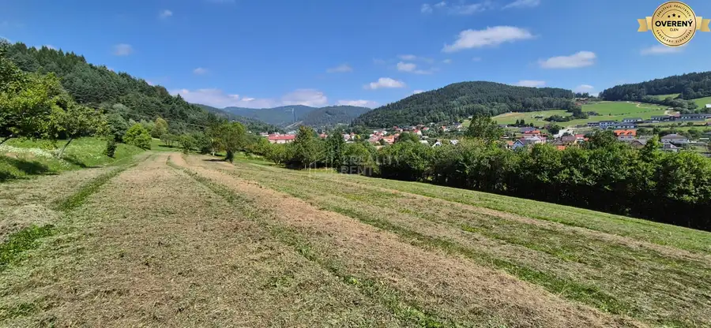
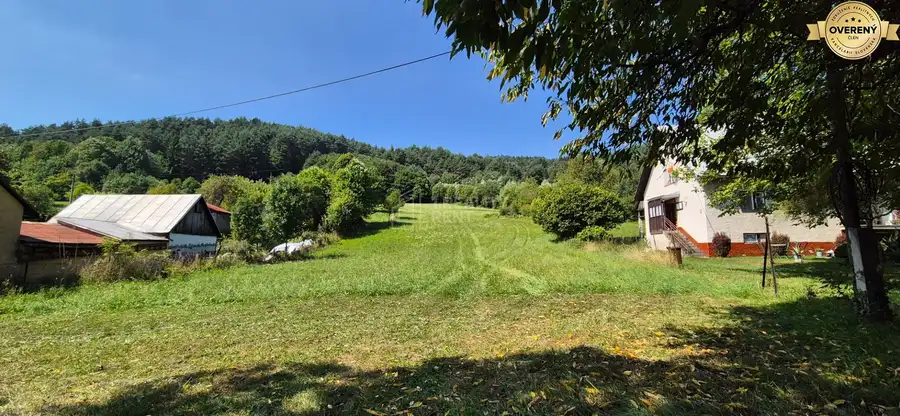
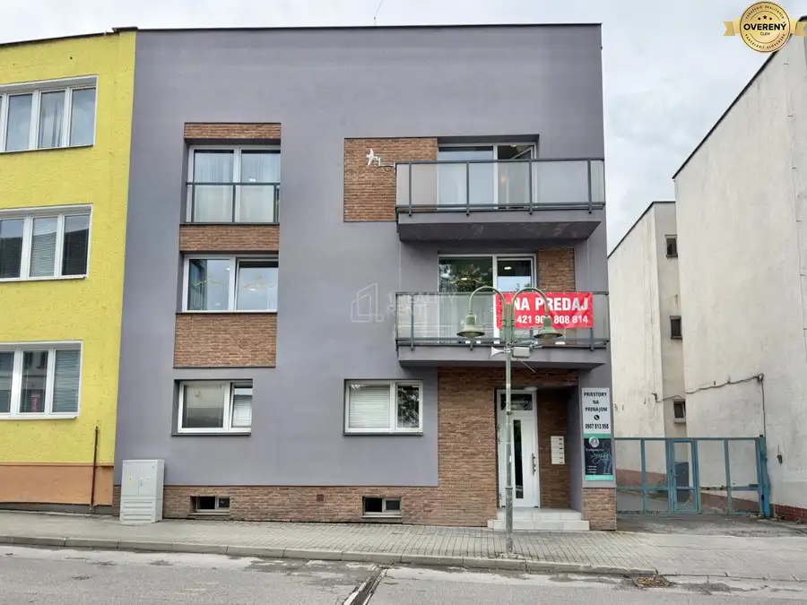
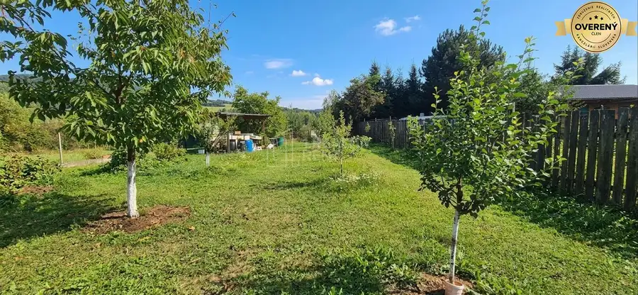
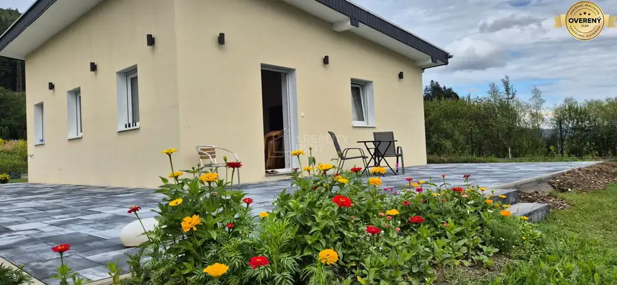
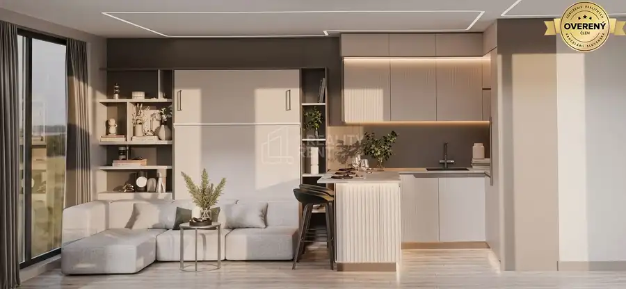
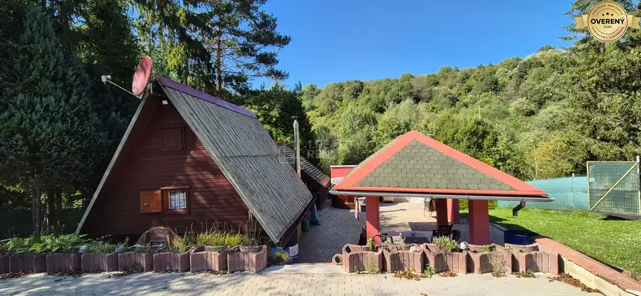
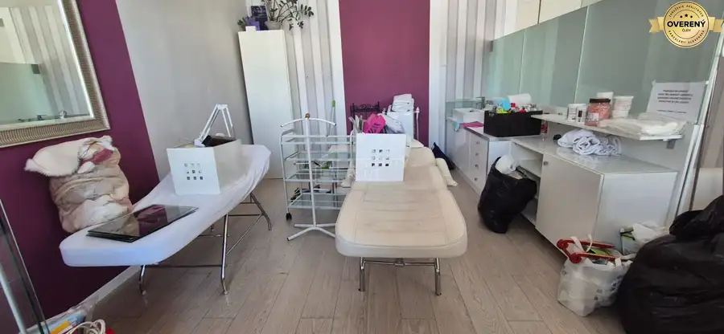

Aktuálna ponuka
Nehnuteľnosti, ktoré ponúkam
8 nehnuteľností na predaj a prenájom. Vyberte typ, alebo napíšte lokalitu.
8 z 8 ponúk

Pozemok9 342 722 €Predaj: Stavebné pozemky 5909m2 v Nesluši vhodné pre developera (SŠ) Nesluša 5909 m² Ponúkame na predaj lukratívne ucelené stavebné pozemky s celkovou výmerou 5909 m² vo vyhľadávanej a rozvíjajúcej sa lokalite Nesluša. Pozemok je…
Pozemok7 166 634 €Predaj: Veľkorysý pozemok s výmerou 2873 m² a úžasným súkromím (SŠ) Nesluša 2873 m² Hľadáte miesto, kde spojíte stavbu vysnívaného domova s maximálnym súkromím, prírodou a možnosťou sebarealizácie? Tento výnimočný pozemok v malebnej…
Rodinné domy10 790 000 €Predaj: Multifunkčný polyfunkčný dom 438 m² v priamom centre Čadce Čadca 10-izbový438 m² Ponúkame na predaj výnimočnú investičnú príležitosť – kompletne zrekonštruovaný, veľký polyfunkčný dom v absolútnom centre mesta Čadca. Tento objekt…
Pozemok8 135 000 €Predaj: Stavebný pozemok 680m2 v Kysuckom Novom Meste (SŠ) Kysucké Nové Mesto 680 m² Ponúkame na predaj rovinatý a celodenne slnečný stavebný pozemok situovaný v pokojnej, okrajovej časti Kysuckého Nového Mesta. Ak hľadáte miesto pre…
Rodinné domy10 240 000 €Novostavba domu so záhradou za cenu bytu v Kysuckom Novom Meste (SŠ) Kysucké Nové Mesto 2-izbový62 m² Ponuka, ktorá prekonáva bývanie v byte - kompletne zariadená novostavba s bazénom a vlastným pozemkom v Kysuckom Novom Meste! Hľadáte moderné…
Rodinné domy4 55 000 €Na predaj: Luxusný mobilný dom „ZEN HOUSE“ - ihneď k odberu Nesluša 2-izbový39.6 m² Hľadáte moderné, štýlové a kompletne pripravené bývanie bez zdĺhavého čakania a stavebných starostí? Ponúkame na predaj dizajnový Mobilný ZEN HOUSE,…
Chaty a chalupy10 69 000 €Útulná chatka v Divine s pozemkom v OV a vlastným malým wellnessom Divina 2-izbový40 m² Ponúkame na predaj záhradnú chatku s vlastným súpisným číslom a pozemkom v osobnom vlastníctve vo vyhľadávanej lokalite záhradkárskej osady v Divine.…
Nebytové priestory6 Cena dohodouPrenájom :kancelária 23m2 v budove na Národnej ulici v centre Žiliny Žilina 23 m²2. podlažie 1.Reality Rent vám ponúka na prenájom kanceláriu s výmerou 23,5 m2 na Národnej ulici. Nachádza sa na 2. poschodí v budove so vstupom z Národnej…Tomuto výberu zatiaľ nezodpovedá žiadna ponuka. Napíšte mi, čo hľadáte.